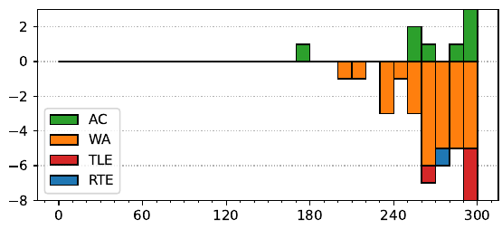

46th ICPC World Finals
Problem authors:
Martin Kacer and Yujie An
Solved by 8 teams.
First solved after 179 minutes.
Shortest team solution: 3096 bytes.
Shortest judge solution: 2894 bytes.

To solve this problem, we need to understand what data a single move provides us about the state of the world and determine whether the information we have is compatible with some starting positions of the cards. Given that we have to check consistency of our knowledge with possible starting hands, we will represent our knowledge in terms of what it implies about the starting hands (and separately keep how that state changed from the time we started).
There are three types of events listed in the input, we need to understand how they affect the state of the world. We will store the following types of information:
Additionally, for each card, we store its current position, if it has moved.
If a player x asks y for a card C, and gets it, then:
If a player x asks a player y for C and doesn’t get it, then:
Finally, if a player declares a quartet, we need to know that for all the cards in the set, either it has moved and they already have it (in which case we know nothing), or it hasn’t moved, and then we learn they started with it. And we mark all the cards to have a known position of “gone”.
Given this knowledge, how do we check if the information we have is consistent with some starting hand? The constraints are small enough that a somewhat pruned brute force search can work. However, the problem can also be represented as a matching problem, where we are matching the 32 cards in the players’ hands to the 32 cards values.
If there exists a perfect matching in this graph, it’s possible no-one has cheated yet.